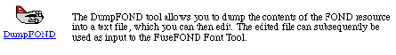
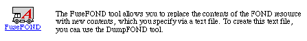
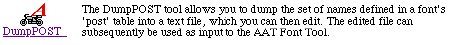
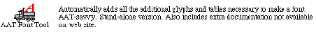
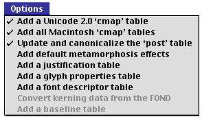

What is the Euro and what does it look like?The Euro currency symbol The Euro is the name of the proposed single currency symbol for the European Union. According to the European Union, the Euro is scheduled to exist as banking currency beginning on January 1, 1999, and it will move into more general use with the introduction of coins and notes on January 1, 2002. We recommend that all developers add support for the Euro now to prepare for its launch in 1999. For more information on the Euro, please see The European Union web site. Unicode and the EuroAs stated by the Unicode Consortium's Unicode Technical Report #8: "The Euro character is encoded in the Unicode Standard as U+20AC EURO SIGN. To avoid confusion, the historical character U+20A0 EURO-CURRENCY SIGN has been updated with an informative note and a cross reference to U+20AC EURO SIGN." Please see the Unicode Consortium's Unicode Technical Report #8 for more detail. Mac OS Support - Fonts and PrintingMac OS FontsThe standard European glyph, as designed and specified by the European Union in Brussels, has been added to all of Apple's Mac OS fonts to be distributed with Mac OS 8.5, due out later in 1998. Under Mac OS 8.5, you will find the Euro glyph in the following fonts: Apple Chancery, Capitals, Charcoal, Chicago, Courier, Gadget, Geneva, Helvetica, Hoefler Text, Monaco, New York, Palatino, Sand, Skia, Symbol, Techno, Textile, and Times. In all of the fonts listed above, except Symbol, the character has been added at Option-Shift-2 (MacRoman Encoding decimal 219, hex 0xDB), replacing the international currency symbol.
The international currency symbol
For Symbol, the glyph has been added at Option-t (MacRoman Encoding decimal 160, hex PrintingLaserWriter 8LaserWriter 8.6The changes to the LaserWriter 8.6 driver for supporting the Euro character apply only to Mac-encoded fonts. A font is considered a Mac-encoded font if the host-based version of the font is marked as a font that requires Mac Encoding (Bit-1 of the font's font classification word is set). The following description only applies to fonts which are marked as Mac-encoded fonts. The LaserWriter driver is responsible for reencoding fonts marked as Mac-encoded fonts so that their encoding corresponds to the Apple-defined MacEncoding vector. Prior to LaserWriter 8.6, the MacEncoding vector contained the name "/currency" at the code point corresponding to Option-Shift-2. When imaging the character at the Option-Shift-2 code point in Mac-encoded fonts, drivers prior to LaserWriter 8.6 imaged the character named "/currency" (which corresponds to the international currency symbol). With the introduction of Mac OS 8.5 and LaserWriter 8.6, Apple is redefining this code point in the MacEncoding vector to instead correspond to the Euro character. Therefore, the MacEncoding vector supplied by LaserWriter 8.6 contains the name "/Euro" at the code point corresponding to Option-Shift-2. While Apple is supplying screen fonts which contain the Euro glyph at this code point, a large number of printer-resident fonts do not contain the Euro glyph at all. In order to support the Euro glyph whenever LaserWriter 8.6 encounters the Option-Shift-2 character from a Mac-encoded font, it images the Euro glyph (named "/Euro") from the Symbol font. If the Symbol font does not contain a character named "/Euro", then LaserWriter 8.6 adds it to the existing printer Symbol font prior to any imaging. This LaserWriter 8.6 behavior is implemented for all Mac-encoded fonts, regardless of what glyph is actually present at that code point in the screen font on the host. Even if the international currency symbol appears on screen, if the font is a Mac-encoded font, the LaserWriter 8.6 driver will image a Euro character on the printed page. The LaserWriter 8.6 driver does not detect which glyph is present in the screen fonts; it simply treats the Option-Shift-2 code point of Mac-encoded fonts as the Euro code point.
The behavior for older LaserWriter 8 drivers depends upon the driver and possibly the version of the
LaserWriter 8.4.x through 8.5.1The LaserWriter 8.4.x and 8.5.1 versions of the driver use a number of shared libraries contained in the
These drivers' behavior will be different if they are used with LaserWriter 8.3.x and earlierThese drivers do not use the Other Printer DriversRasterAll raster printer drivers should not have problems printing the Euro character, inside or outside of Mac OS 8.5. Apple's Color StyleWriter series are able to print this glyph without problems. PostScriptThird-party PostScript printer drivers may or may not be able to handle printing the Euro glyph contained in our new fonts. If you are having problems printing with a third-party printer driver, please contact the printer driver developer for more information, or try using LaserWriter 8.6 with your PostScript device to get the proper output. Third-party Font DevelopersSo what should you do with your font to support the Euro so that it shows up on the screen and prints? This depends
on whether you are making a PostScript or a TrueType font. PostScript fonts contain only one resource to be altered:
the The
|
Glyph |
|
(decimal) |
≠ |
notequal |
173 |
∞ |
infinity |
176 |
≤ |
lessequal |
178 |
≥ |
greaterequal |
179 |
∂ |
partialdiff |
182 |
∑ |
summation |
183 |
∏ |
product |
184 |
¼ |
pi |
185 |
∫ |
integral |
186 |
ω |
Omega |
189 |
√ |
radical |
195 |
≈ |
approxequal |
197 |
Δ |
Delta |
198 |
◊ |
lozenge |
215 |
Euro |
219 |
|
apple |
240 |
|
Note: |
This means that if you have glyphs at any of the code points listed above which you want printed with the glyphs defined in your own source font, you must turn Bit-1 off. This will deactivate substitution of ALL the above listed glyphs.
Consequently, with Bit-1 off, it is then your responsibility to ensure that the glyphs in your font correspond to the encoding you intend. If Mac Standard Encoding is intended, you must have all of the above Symbol glyphs present in your font in their correct positions - including the Euro, of course.
Bit-1 set to on in combination with Bit-9 set to off also marks the encoding as "Macintosh Standard Encoding". In this case, the printer driver generates the Macintosh Standard Encoding vector for the font.
Bit-9
Bit-9 makes the driver read a custom encoding table in the FOND. The entries in this table then update the natural character encoding of the font.
Note that setting Bit-9 affects the interpretation of Bit-1 because it deactivates Macintosh Standard Encoding as described above.
The natural encoding of a font is the one it was generated with. This will typically also be Macintosh Standard Encoding if it was generated for the Macintosh with a normal development tool like Fontographer. Please note, however, that it may not be - the natural encoding could be the Adobe Standard Encoding or it could be any other made by specialist tools or developers.
Care should therefore be taken to establish what the natural encoding is when working with Bit-1 off (i.e., Non-Macintosh Standard Encoding).
If Bit-9 is set there should also be a glyph reencoding vector ("glyph-name encoding subtable") present
in the FOND containing the overriding encoding values.
Bit-9 normally indicates that the font does not use the default MacEncoding vector. However, in the cases where you want the MacEncoding vector but wish to image the 16 Symbol substitution glyphs with glyphs from your own font, then Bit-1 would be off, Bit-9 would be set, and the reencoding vector would contain the full Standard MacEncoding. If you know your natural encoding exactly, the reencoding vector would contain only the changes necessary to make it MacStandard.
Glyph reencoding vector
Within DumpFOND text files, the glyph reencoding vector table is labeled the "GLYPH REENCODING TABLE". Within
Inside Macintosh, it is called the "glyph-name encoding subtable". The format and location of the glyph-name
encoding subtable in the FOND is described in
Inside Macintosh-Text, p. 4-105 through 4-106.
Always declare the Euro in your fonts
Because the Macintosh Standard Encoding now has two variations - the old Generic Currency symbol variant and the new Euro variant - a new method other than the encoding name is needed to resolve the variants. This information is necessary for programmers who need to map data in the font to another encoding, such as Unicode, or to another platform. Binary identical cross-platform data formats are an example.
Apple recommends that a reencoding vector containing the "Euro" be added to the FOND resource
for all fonts that contain the Euro, even if it is not used (i.e., Bit-9 is not set). The reason is that
this is the most universally available place that applications and system programmers can look to find out
if the font contains a glyph for the Euro or the older International Currency Symbol. TrueType fonts declare
the "Euro" in the post table, but PostScript fonts and NFNTs have no such structure.
The FOND is the only resource common to all these types of font.
Note that as discussed in the earlier section describing LaserWriter 8 printing, LaserWriter 8.6 does not detect the Euro in the font. For fonts marked as MacEncoded Fonts, the LaserWriter driver 8.6 always treats the code position decimal 219 as the Euro character. The declaration being recommended here is purely for other applications.
Summary of Bit Settings
Bit-1 |
Bit-9 |
Description |
0 |
0 |
Download the font exactly as it exists using the natural encoding. |
1 |
0 |
Replace the encoding vector with Mac Standard encoding including the Euro. Also switch to Symbol. |
0 |
1 |
Take delta vector supplied and apply as an update to the natural encoding. No switch to Symbol. (Typically used for dingbat and "pi" fonts such as Carta, Symbol, Zapf Dingbats and Adobe Expert sets.) |
1 |
1 |
Take delta vector supplied and apply as an update to the natural encoding. Switch to Symbol. Do not apply Macintosh Standard encoding. (Typically used with Macintosh Roman variant encodings). |
How to add the FOND reencoding vector
To work on the FOND resource, you should consider using DumpFOND
and FuseFOND. These are free font tools available from Apple at http://fonts.apple.com.


Steps to add the FOND reencoding vector:
(1) Run DumpFOND to create a text file of the FOND of your font.
A complete sample FOND text source of the Geneva font (with all of the tables filled in) accompanies
this document. An excerpt is included below to show the Style Mapping Table and the Glyph Reencoding Table (or "vector").
/* DUMP OF FOND RESOURCE 3, NAME 'Geneva' */ .....contents /* FONT ASSOCIATION TABLE */ .....contents /* STYLE MAPPING TABLE */ Font name needs coordinating: true Font requires Mac vector reencoding: true Font is outlinable by setting PaintType 2: true No smear and whiteout outlining simulation: false No smear bolding simulation: false Simulate bold by increasing pointsize: false No obliquing for italic simulation: false No simulation of condensed style: false No simulation of expanded style: false Font requires non-Mac reencoding: false No additional interchar spacing other than space char: false Reserved: 0 ..... additional contents /* GLYPH REENCODING TABLE */ ......contents excerpt..... Name for character code 0xD9: 'Ydieresis' Name for character code 0xDA: 'fraction' Name for character code 0xDB: 'Euro' Name for character code 0xDC: 'guilsinglleft' Name for character code 0xDD: 'guilsinglright' Name for character code 0xDE: 'fi' Name for character code 0xDF: 'fl' /* GLYPH WIDTH TABLE */ .....contents /* BOUNDING BOX TABLE */ .....contents |
(2) Most fonts in the marketplace today do not have a Glyph Reencoding Table. Therefore, it is likely that you will need to create one and add it to your font. If you have a Standard Mac Encoding font design, you can use the Geneva sample file included with this document. You can simply paste the text for the Glyph Reencoding Table from Geneva into your FOND text dump. If you prefer, you can also run DumpFOND on any of the new Mac OS 8.5 fonts, except Symbol, and use that table instead.
|
Note: |
If you would like another encoding arrangement, you will need to create or edit your own table.
You should use the standard PostScript encoding ('post') names for each of your glyphs
as published in Adobe's PostScript Language Reference Manual. Please note
that 'post' names are case-sensitive.
(3) Use a text editor, such as SimpleText, to replace the name "currency" with "Euro" wherever it is found
in the dumped FOND glyph reencoding table. Do not use a "replace all" function so you don't
replace "currency" in other tables, such as the metrics table. Note that the "Euro" must be begin with
an upper-case "E", as PostScript names are case-sensitive.
(4) Set Bit-1. For normal MacEncoded fonts, make sure that Bit-1 in the font classification word
in the FOND is set to true, as shown below (see comments on Bit-1 and Bit-9 settings above).
Font requires Mac vector reencoding: true
(5) Setting of Bit-9. If your font design requires glyph reencoding table overrides to the standard encoding,
make sure that Bit-9 in the font classification word in the FOND is set to true, as shown below
(see comments on Bit-1 and Bit-9 settings above).
Font requires non-Mac reencoding: true
(6) Run FuseFOND to take the edited file and compile it back into the FOND resource of your font.
Scope of reencoding vectors
It is helpful to consider that there are three classes of reencoding vector: Full, Half, and Delta. The full vector contains 256 entries. The half vector contains 128 entries covering either the "low-byte" range (0-127) or the "high-byte" range (128-255). A delta reencoding vector contains only those characters that differ from the natural encoding. The smallest delta can be a single entry.
The sample Geneva reencoding vector contains a half vector for the high-byte range (i.e., it has 128 line entries which cover all glyphs in the high byte).
Apple recommends using a half vector for the high byte. There are three reasons for this:
(1) Within the Roman script, most reencoding issues do not affect the low-byte ASCII range.
(2) Creating a delta encoding requires that you know exactly what your natural encoding is. Knowing what the natural encoding is can be hard as it is not easily viewable and may also depend on fonts resident in your printer.
(3) The OS 8.1 release and later printer drivers support delta reencoding vectors of any size (i.e., 1-256 entries), but some earlier drivers may only work with half or full reencoding vectors.
Experiment with different scope reencoding vectors, depending on your design needs. A full or half vector has the benefit of explicit declaration, which avoids confusion and is less dependent on the exact behavior of a specific printer driver.
If you have a Euro in the font, at the very least include a single entry delta containing the "Euro". We recommend that you do this regardless of whether Bit-9 is on or off.
'sfnt'
'sfnt' changes to be made
The 'sfnt' resource normally describes a TrueType outline font, though it can also contain Type 1 PostScript
fonts. This discussion applies only to TrueType outline fonts in the 'sfnt'. The 'sfnt'
contains a large number of tables that are necessary to draw and interpret the glyphs of a font. The two TrueType
tables that need changing for Euro support are the 'cmap' table (Character Code Mapping Table) and
the 'post' table (PostScript Encoding Names Table).
A 'cmap' associates character codes to glyph indices. A 'post' table associates glyph
indices with PostScript encoding names. Within these tables individual glyphs are identified by a glyph index
number, which is arbitrary and internal to the font (i.e. if you remove a glyph, the index numbers of glyphs
following the deletion will change). Fonts can contain multiple 'cmap' resources, enabling them
to be used on different platforms with varying encodings, or for various purposes on the same platform. The
Mac OS platform supports a series of language script encodings (e.g., MacRoman, MacArabic, MacJapanese),
as well as the Unicode encoding UTF-16.
TrueType fonts can contain a large glyph collection (up to 65,000) which is independent of any encoding. Moreover, TrueType supports multiple character encodings for a single font, and normal TrueType development tools allow you to work with each of these parts independently.
Apple recommends appending the Euro glyph to a TrueType font without removing the existing international currency symbol. This has two advantages:
(1) the glyph index of the Euro is the last glyph index value, and all other indexes and associated tables do not change.
(2) Unicode-savvy applications that use Apple Type Services for Unicode Imaging (ATSUI) will have access to both characters.
The specific 'sfnt' changes that must be made for Euro support are:
(1) The Euro glyph should be given the
postname "Euro". (PostScript names are case-sensitive, so the "E" must be upper-case).
(2) The MacRoman'cmap'should be edited to assign the "Euro" to the code pointOxDB(decimal 219).
(3) The Unicode'cmap'should then be edited to assign the "Euro" to the code point U+20AC.
How to change the post names and cmap
To work on the 'sfnt' (TrueType) resource, you should consider using DumpPOST and AATFontTool.
These are free Apple tools which you can download from http://fonts.apple.com.


Your TrueType font is assumed in this discussion to be one of the Macintosh Roman encodings and to contain
a 'cmap' and 'post' table.
To alter the post table, you must use a name list as input to the AAT Font Tool.
This will override the existing value and automatically update the cmap.
You achieve this by doing the following steps:
(1) Run DumpPOST to produce a text file of all the 'post' names in the font.
This shows the postname and its associated glyph index value. With TrueType fonts you can
add glyphs to the font which are not encoded. This means you can either append the Euro glyph
or you can paste it over the currency glyph. We recommend the former (appending) so that the
currency glyph can then still be accessed by ATSUI users or via a switched 'cmap'.
In the sample below, you can see the currency symbol has been left in, and the Euro added as a separate TrueType glyph with its internal glyph index incremented at the end of the collection.
Ydieresis /* 187 */ fraction /* 188 */ currency /* 189 */ guilsinglleft /* 190 */ guilsinglright /* 191 */ .......excerpt.... Dcroat /* 379 */ commaaccent /* 380 */ Euro /* 381 */ |
(2) Save the postnames file and run AAT Font Tool. Go to the options menu (which you will find all checked initially). Uncheck all except the first three options (shown in screen shot below):

(3) Select "Use Name List..." from the File menu and select the postnames file. Then select
"Open and process..." from the File menu and select your font. The AAT Font Tool will then update
the 'post' table and 'cmap' table accordingly.
You can confirm that the changes have been made to your font by opening your font in TrueEdit (a
free tool available on the fonts.apple.com web site). Open
the 'post' table in TrueEdit and confirm by inspection that the "Euro" entry is present as intended.
About the AAT Font Tool
Running the AAT Font Tool can also do a few other smart things to your fonts if you leave the other
options checked. Here is an short outline of how it works: The AAT Font Tool tool does not rely on
"standard glyph ordering". It analyzes the glyph repertoire based primarily on the 'post'
table, which is to say, the actual names. It looks at the existing 'cmap' tables for 2-byte
fonts, and for any one-byte fonts which don't have names in the 'post' table (i.e., the
'post' table is format 3).
It adds all the 'cmap' tables which represent scripts and/or languages which are present to
significant degree. Thus, if a font only has a Hebrew alef but not the other letters, it won't add a Hebrew
'cmap'; if all the letters are present, then it will.
It adds all the Roman variants for script 0 fonts. It has been successfully used on third-party fonts whose glyph layouts are significantly different from Apple's.
Full details are in the AAT Font Tool's documentation on Apple's font web site, including descriptions of the many other powerful GX and AAT features you can add to your fonts at the same time while adding the Euro glyph.
The Benefit
Apple's system fonts have been updated as described above. Third-party fonts that follow these recommendations will inherit the same semantic and character handling properties in the system and the same keyboard mappings, which is important for consistent user interface.
Adding a Euro glyph to a TrueType font with RoyalT
For those who have TrueType fonts that contain a large investment in hinting, it is undesirable to lose those hints and revert back to a PostScript source just to get one new Euro glyph added. Here is a step-by-step instruction on how to use the RoyalT font tool to add a Euro glyph to the TrueType font file:
|
Warning: |
This sequence of instructions copies a standard Euro glyph from one font and pastes it over a glyph in the target font. The CVT and hint instructions for the glyph are then updated manually. Entry numbers refer to points in the Euro glyph outline. These numbers will differ from the particular glyph you will be using. You will have to identify which points hints reference in your own outlines:
| (1) | Launch RoyalT PPC 3.2d4 |
| (2) | Open your Euro glyph source font |
| (3) | Command-H and go to the glyph index number of the Euro |
| (4) | Open your Target font |
| (5) | Command-H and go to the target glyph location. e.g., 189, the approximate/usual index number of the international currency symbol in standard Macintosh fonts. |
| (6) | Click on the main window of the source font, then command-C to copy the glyph already selected (source font can be closed after this). |
| (7) | Click on the main window of the target font, then command-V to paste to the glyph already selected. |
| (8) | Open Views: CVT from pull-down menu. |
| (9) | Scroll to end of list and highlight the last entry. |
| (10) | Command-D to append to the end of the list. |
| (11) | Add entry value 130. Note the entry line number on paper and mark it as entry "A". |
| (12) | Scroll to the end of the list again and highlight the last entry. |
| (13) | Command-D to append to the end of the list. |
| (14) | Add entry value 48. Note the entry line number on paper and mark it as entry "B". |
| (15) | Open Views: Instructions window from the pull-down menu. |
| (16) | At every occurrence of the number 227 (8 occurrences for this Euro outline), change it to the value of "A" from step (11) above. In this example these are instruction lines 3, 19, 23, 25, 28, 29, 30. |
| (17) | At every occurrence of the number 228 (5 occurrences for this Euro outline), change it to the value of "B" from step (14) above. In this example these are instruction lines 6, 11,14, 15, 16. |
| (18) | Command-R to recalculate |
| (19) | Open Views:Info window from the pull-down menu. |
| (20) | Change the LSB value to 100, unless the font is monospaced; in this case, change the LSB to match the RSB (rough guide only). |
| (21) | Command-R to recalculate |
| (22) | Click on main window of target font & Save. |
| (23) | Run ResEdit and remove 'PREC' and 'STR ' resources that were automatically added by RoyalT. |
| (24) | Update the 'post' table to contain the postname of the glyph you have added at the appropriate index value. |
Mac OS X Server Support
The Mac OS X Server team is currently working on adding support for the Euro character. Please watch the Mac OS X Server web site for further information.
Summary
As you can see, there is plenty of good information on the Euro out there. We hope this gives you a good sense of the support that Apple has added to its OS releases, and gives you an idea of what you need to do with your fonts.
References
Apple information:
The official European Union Euro pages:
Unicode Consortium Euro information
Adobe Information:
Adobe PostScript Language Reference Manual
Microsoft's Euro pages:
General Euro Info sites:
Downloadables
|
|
Acrobat version of this Note (192K). |
|
|
|
Geneva dump (23K). |